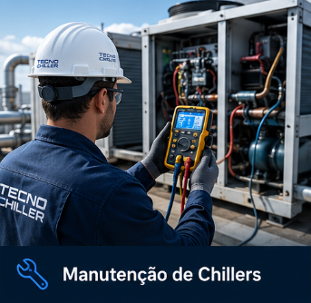
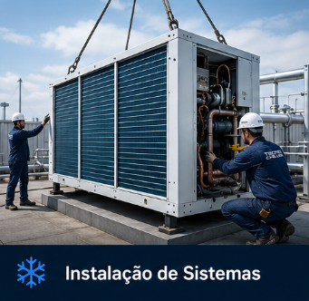
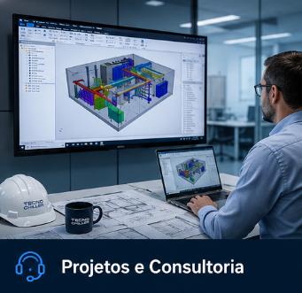
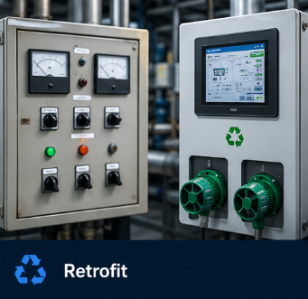
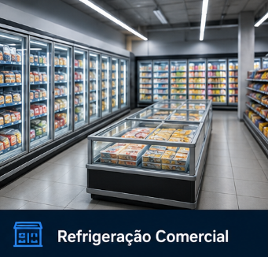

Nossos Serviços
Soluções completas em climatização e refrigeração para empresas que exigem eficiência, desempenho e confiabilidade.
Manutenção de Chillers
Serviços completos de manutenção preventiva, corretiva e preditiva em chillers de diversas marcas, garantindo desempenho contínuo e redução de falhas operacionais.
Instalação de Sistemas
Implantação de sistemas de climatização e refrigeração com foco em eficiência, segurança e máximo desempenho para cada tipo de operação.
Projetos e Consultoria
Desenvolvimento de soluções sob medida, com análise técnica e foco em eficiência energética, confiabilidade e adequação às normas.
Retrofit
Modernização de sistemas antigos, com atualização tecnológica que aumenta a eficiência, reduz custos e melhora a performance operacional.
Refrigeração Industrial
Soluções completas para processos industriais, com sistemas robustos projetados para alto desempenho e funcionamento contínuo.
Refrigeração Comercial
Sistemas de climatização para ambientes comerciais, garantindo conforto térmico, eficiência energética e confiabilidade no dia a dia.

Manutenção de Chillers
Executamos serviços especializados de manutenção preventiva, corretiva e preditiva em chillers industriais e comerciais, garantindo alta performance, confiabilidade e continuidade operacional dos sistemas de climatização e refrigeração.
Nossa equipe técnica atua com diagnóstico avançado de falhas, análise de parâmetros elétricos e frigorígenos, inspeção de compressores, verificação de trocadores de calor, calibração de componentes e substituição de peças conforme as especificações dos fabricantes.
Possuímos experiência em equipamentos de diferentes capacidades e tecnologias, atendendo indústrias, centros logísticos, hospitais, data centers, supermercados e operações críticas que exigem estabilidade térmica e máxima eficiência energética.
é executado com foco na redução de consumo energético, prevenção de paradas inesperadas e aumento da vida útil dos equipamentos, sempre seguindo elevados padrões de qualidade, segurança e desempenho técnico.

Instalação de Sistemas
Projetamos e implementamos sistemas de climatização e refrigeração com foco em eficiência, integração e desempenho contínuo. Cada projeto é desenvolvido de forma personalizada, considerando a demanda térmica, o layout da operação e as necessidades específicas de cada cliente.
Nossa equipe realiza toda a execução técnica da instalação, incluindo montagem de equipamentos, interligação hidráulica e frigorígena, infraestrutura elétrica, automação e configuração dos sistemas, garantindo uma operação segura, estável e preparada para alto rendimento.
Atuamos com soluções para ambientes industriais, comerciais e corporativos, instalando sistemas capazes de manter controle preciso de temperatura, melhor aproveitamento energético e maior confiabilidade operacional em aplicações de diferentes portes.
Durante todo o processo, seguimos padrões rigorosos de engenharia, organização e acabamento técnico, assegurando instalações limpas, eficientes e preparadas para oferecer máxima durabilidade e performance desde o primeiro funcionamento.
Mais do que instalar equipamentos, entregamos soluções completas para operações que exigem estabilidade térmica, produtividade e continuidade operacional.

Projetos e Consultoria
Desenvolvemos projetos de climatização e refrigeração com análise técnica completa, oferecendo soluções inteligentes para operações que exigem eficiência, desempenho térmico e confiabilidade operacional.
Nossa consultoria atua desde o estudo inicial da demanda até a definição dos equipamentos, capacidade térmica, distribuição de carga, consumo energético e viabilidade técnica da instalação, garantindo que cada sistema seja dimensionado de forma precisa e estratégica.
Realizamos avaliações técnicas em sistemas existentes, identificação de gargalos operacionais, análise de eficiência energética e recomendações para modernização, otimização e ampliação de estruturas de climatização e refrigeração.
Cada projeto é elaborado com foco em performance, redução de custos operacionais, segurança e durabilidade, considerando as características específicas de indústrias, hospitais, centros logísticos, supermercados, data centers e ambientes críticos.
Com experiência técnica e visão estratégica, entregamos soluções que unem engenharia, tecnologia e planejamento para proporcionar maior estabilidade operacional e melhor aproveitamento dos recursos da operação.

Retrofit de Sistemas
Modernizamos sistemas de climatização e refrigeração através de soluções de retrofit desenvolvidas para aumentar a eficiência operacional, reduzir custos energéticos e prolongar a vida útil dos equipamentos.
Nossa equipe realiza uma análise completa da estrutura existente, identificando limitações técnicas, componentes obsoletos, perdas de desempenho e oportunidades de atualização tecnológica sem a necessidade de substituição total do sistema.
O processo pode incluir substituição de compressores, atualização de painéis elétricos e automação, adequação de tubulações, modernização de controles, otimização hidráulica e melhoria da eficiência térmica, sempre respeitando as características da operação e as exigências do ambiente.
O retrofit permite recuperar a performance dos sistemas, aumentar a confiabilidade operacional e reduzir falhas recorrentes, proporcionando maior estabilidade e economia para operações industriais, comerciais e corporativas.
Com planejamento técnico especializado e execução precisa, entregamos soluções que renovam o desempenho da instalação e alinham o sistema às atuais exigências de eficiência, tecnologia e produtividade.

Refrigeração Industrial
Oferecemos soluções completas em refrigeração industrial para operações que exigem controle térmico preciso, alta confiabilidade e funcionamento contínuo em ambientes de grande demanda operacional.
Atuamos na instalação, manutenção e otimização de sistemas de refrigeração aplicados em indústrias, centros logísticos, câmaras frias, processos produtivos, armazenamento e operações que dependem de estabilidade térmica para garantir qualidade, segurança e desempenho.
Nossa equipe técnica trabalha com sistemas de média e baixa temperatura, realizando monitoramento de desempenho, análise de pressão e temperatura, inspeção de compressores, condensadores, evaporadores e demais componentes essenciais para máxima eficiência operacional.
Desenvolvemos soluções projetadas para reduzir consumo energético, minimizar perdas operacionais e garantir maior durabilidade dos equipamentos, sempre utilizando tecnologias e processos alinhados às necessidades específicas de cada operação.
Com experiência técnica, agilidade e alto padrão de execução, entregamos sistemas preparados para operar com segurança, eficiência e máxima performance em ambientes industriais de alta exigência.

Refrigeração Comercial
Executamos soluções em refrigeração comercial para estabelecimentos que necessitam de desempenho contínuo, conservação eficiente e estabilidade térmica no funcionamento diário de suas operações.
Atuamos em supermercados, restaurantes, cozinhas industriais, centros comerciais, lojas, câmaras frias e diversos ambientes comerciais, oferecendo instalação, manutenção e modernização de sistemas de refrigeração desenvolvidos para garantir eficiência, segurança e confiabilidade operacional.
Nossa equipe realiza diagnóstico técnico, configuração de equipamentos, regulagem de temperatura, verificação de componentes elétricos e frigorígenos, além de inspeções preventivas para assegurar o funcionamento adequado dos sistemas e evitar falhas que possam impactar a operação.
Trabalhamos com foco na redução de consumo energético, preservação de produtos, aumento da vida útil dos equipamentos e melhoria da performance térmica, sempre utilizando soluções adequadas para cada tipo de aplicação comercial.
Com atendimento especializado e execução técnica de alto padrão, entregamos sistemas preparados para manter desempenho estável, economia operacional e máxima eficiência no dia a dia do seu negócio.